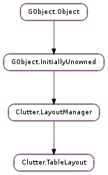

| static | new() |
| get_alignment(actor) | |
| get_column_count() | |
| get_column_spacing() | |
| get_easing_duration() | |
| get_easing_mode() | |
| get_expand(actor) | |
| get_fill(actor) | |
| get_row_count() | |
| get_row_spacing() | |
| get_span(actor) | |
| get_use_animations() | |
| pack(actor, column, row) | |
| set_alignment(actor, x_align, y_align) | |
| set_column_spacing(spacing) | |
| set_easing_duration(msecs) | |
| set_easing_mode(mode) | |
| set_expand(actor, x_expand, y_expand) | |
| set_fill(actor, x_fill, y_fill) | |
| set_row_spacing(spacing) | |
| set_span(actor, column_span, row_span) | |
| set_use_animations(animate) |
| Name | Type | Flags | Description |
|---|---|---|---|
| column-spacing | int | r/w | Spacing between columns |
| easing-duration | int | r/w | The duration of the animations |
| easing-mode | int | r/w | The easing mode of the animations |
| row-spacing | int | r/w | Spacing between rows |
| use-animations | bool | r/w | Whether layout changes should be animated |
None
| Name | Type | Access |
|---|---|---|
| parent_instance | Clutter.LayoutManager | r |
Bases: Clutter.LayoutManager
The Clutter.TableLayout structure contains only private data and should be accessed using the provided API
| Returns: | the newly created Clutter.TableLayout |
|---|---|
| Return type: | Clutter.LayoutManager |
Creates a new Clutter.TableLayout layout manager
| Parameters: | actor (Clutter.Actor) – a Clutter.Actor child of layout |
|---|---|
| Return type: | x_align: Clutter.TableAlignment, y_align: Clutter.TableAlignment |
Retrieves the horizontal and vertical alignment policies for actor as set using Clutter.TableLayout.pack () or Clutter.TableLayout.set_alignment ().
| Returns: | the number of columns |
|---|---|
| Return type: | int |
Retrieve the current number of columns in layout
| Returns: | the spacing between columns of the Clutter.TableLayout |
|---|---|
| Return type: | int |
Retrieves the spacing set using Clutter.TableLayout.set_column_spacing ()
| Returns: | the duration of the animations, in milliseconds |
|---|---|
| Return type: | int |
Retrieves the duration set using Clutter.TableLayout.set_easing_duration ()
| Returns: | an easing mode |
|---|---|
| Return type: | int |
Retrieves the easing mode set using Clutter.TableLayout.set_easing_mode ()
| Parameters: | actor (Clutter.Actor) – a Clutter.Actor child of layout |
|---|---|
| Return type: | x_expand: bool, y_expand: bool |
Retrieves the horizontal and vertical expand policies for actor as set using Clutter.TableLayout.pack () or Clutter.TableLayout.set_expand ()
| Parameters: | actor (Clutter.Actor) – a Clutter.Actor child of layout |
|---|---|
| Return type: | x_fill: bool, y_fill: bool |
Retrieves the horizontal and vertical fill policies for actor as set using Clutter.TableLayout.pack () or Clutter.TableLayout.set_fill ()
| Returns: | the number of rows |
|---|---|
| Return type: | int |
Retrieve the current number rows in the layout
| Returns: | the spacing between rows of the Clutter.TableLayout |
|---|---|
| Return type: | int |
Retrieves the spacing set using Clutter.TableLayout.set_row_spacing ()
| Parameters: | actor (Clutter.Actor) – a Clutter.Actor child of layout |
|---|---|
| Return type: | column_span: int, row_span: int |
Retrieves the row and column span for actor as set using Clutter.TableLayout.pack () or Clutter.TableLayout.set_span ()
| Returns: | True if the animations should be used, False otherwise |
|---|---|
| Return type: | bool |
Retrieves whether layout should animate changes in the layout properties
| Parameters: |
|
|---|
Packs actor inside the Clutter.Container associated to layout at the given row and column.
| Parameters: |
|
|---|
Sets the horizontal and vertical alignment policies for actor inside layout
| Parameters: | spacing (int) – the spacing between columns of the layout, in pixels |
|---|
Sets the spacing between columns of layout
| Parameters: | msecs (int) – the duration of the animations, in milliseconds |
|---|
Sets the duration of the animations used by layout when animating changes in the layout properties
Use Clutter.TableLayout.set_use_animations () to enable and disable the animations
| Parameters: | mode (int) – an easing mode, either from Clutter.AnimationMode or a logical id from Clutter.Alpha.register_func () |
|---|
Sets the easing mode to be used by layout when animating changes in layout properties
Use Clutter.TableLayout.set_use_animations () to enable and disable the animations
| Parameters: |
|
|---|
Sets the horizontal and vertical expand policies for actor inside layout
| Parameters: |
|
|---|
Sets the horizontal and vertical fill policies for actor inside layout
| Parameters: | spacing (int) – the spacing between rows of the layout, in pixels |
|---|
Sets the spacing between rows of layout
| Parameters: |
|
|---|
Sets the row and column span for actor inside layout
| Parameters: | animate (bool) – True if the layout should use animations |
|---|
Sets whether layout should animate changes in the layout properties
The duration of the animations is controlled by Clutter.TableLayout.set_easing_duration (); the easing mode to be used by the animations is controlled by Clutter.TableLayout.set_easing_mode ()